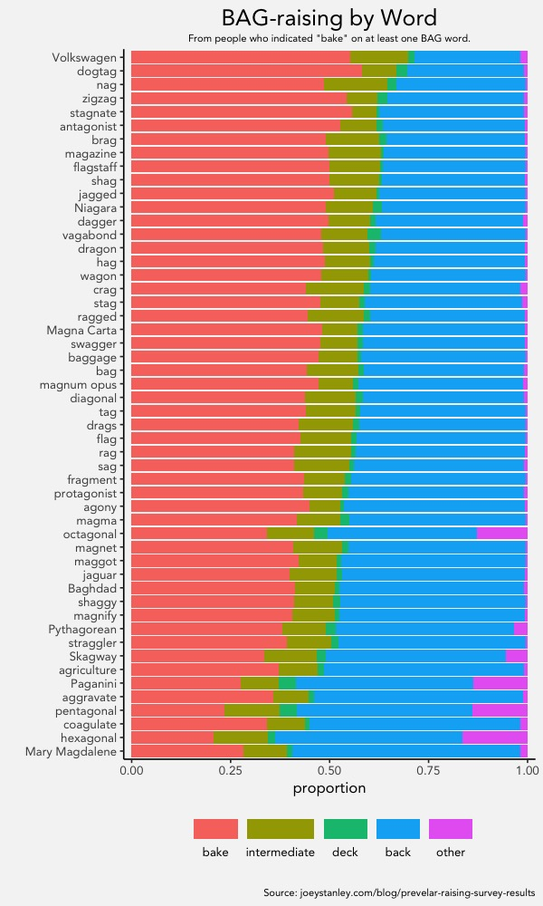
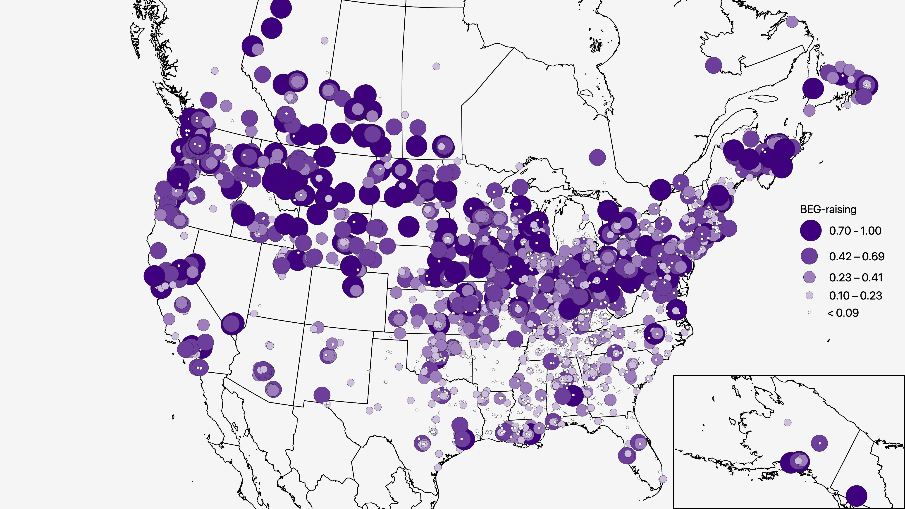
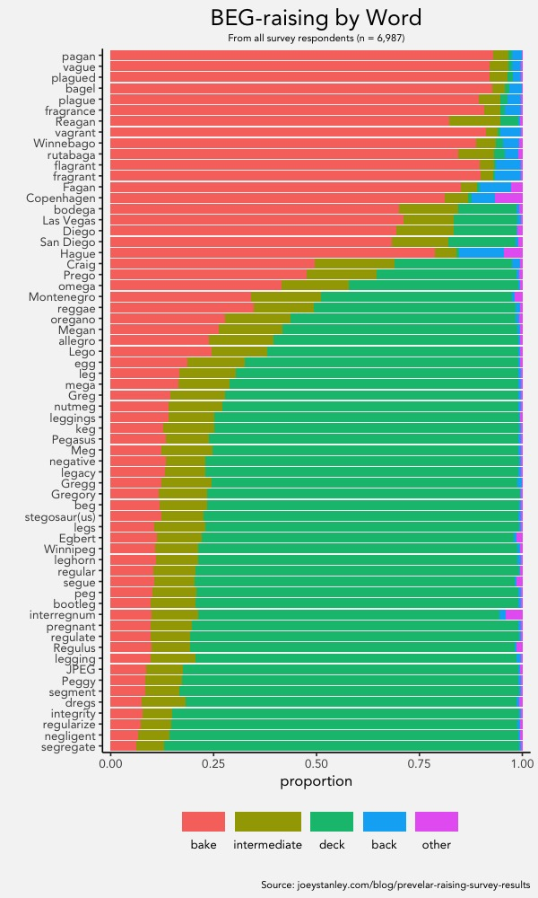
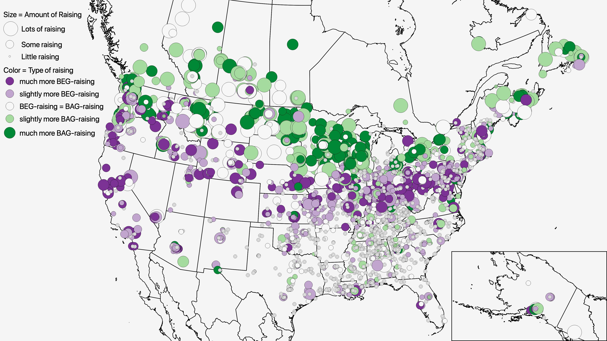

In April and May this year, I posted a survey to a bunch of different subreddits that asked people how they pronounced certain words. If you took the survey, THANK YOU! The number of responses I got was overwhelming and took much longer to analyze than I could have ever anticipated. So, after many months, I’m finally ready to post the results for you. Hopefully you’ll find them interesting.
TL;DR I asked a bunch of people how they pronounced words that rhyme with bag or beg. Basically, people from the northern US and Canadians tend to pronounce them with the same vowel as the word bake. Also, if you do though, it’s less likely in longer words.
Background
Not everyone speaks English the same way, and that’s okay! Linguists like me study these differences between people and we can learn a lot about language and society when we do so.
The specific thing I was interested in was how people pronounce specific vowel sounds when they come before a g—linguists call this thing “prevelar raising.” A bunch of words in English, something like 84 of them, have this “agg” sound in them. Words like bag, sag, flag, rag, dragon, and aggravate. For shorthand, I’ll refer to this group of words as the “
So then there’s another set of about 60 words that have this “eg” sound in them, like beg, egg, leg, keg, legacy, and integrity. I’ll call this group of words the “
So what better way to find out than to ask several thousand people, right?
How did I do this?
So several months ago, I picked several dozen
If you want to take the survey yourself, click here!
I then went to the subreddit dedicated to each US state and Canadian province and territory and asked the moderators if I could post a survey. Almost all of them said yes. So with a dedicated Reddit account (/u/dialectologist), I went ahead and posted it on about those 60 subreddits.
And tons of people took the survey! Almost 7,000! And from these responses I got around 567,000 individual survey questions answered. This was like ten times more than what I expected. Super cool.
When I was processing these responses though, I wanted to find a way to turn them into numbers. So what I did was every time people answered bake, that was a 1. Every time they answered deck, that was a 0. And every time they answered back I gave them a –1. I then took all the responses for a person’s
So basically, I have three numbers now. For each person, I have their “degree of
Finally, to get people’s location, I took the responses they wrote down on the question that asked “where are you from” and found the GPS coordinates of that city.
Now, on to the results!
General Results
bag words
I’ll start with the

In this map, darker, bigger circles represent people who had more
However, sometimes people had

In this chart, each word is on its own row. Within that row, the width of the red box is the number of people that indicated that they say that word with the same vowel as bake. Yellow is “somewhere between bake and deck”. The small green ones are deck and the blue ones are back. Purple are where people said it had some other vowel. This chart shows that not all
So now lets turn our attention to the
beg words
So
To answer the first question, here are the results on a map:

Again, darker, bigger circles represent people who said more
Just as surprising was the following plot which shows how often

Here, we see that there’s a major difference between the top and bottom of the chart. Okay so technically, words like vague, pagen, plague, and fragrant don’t belong on this chart because pretty much everyone would pronounce them with a “long a” sound. I’ll ignore this for now. But even between words that are spelled with eg, there’s a big difference between them. A word like segregate is said with the same vowel as bake less than 10% of the time. But a word like egg is almost 20% and omega is almost 40%. And, if you look closely, most of the words towards the bottom all have consonants following the g—integrity, segment, pregnant. That’s pretty interesting if you ask me.
Both in one map
When you combine the two maps, you can start to see where one vowel is pronounced like bake and the other is not. Here, green areas are those that have

Basically, the whole reason I did this survey was to produce this map. I wanted to see if there would be purple areas without green and green areas without purple. And there are!
Conclusion
Again, if you took the survey, a huge thank you. I’ve had a lot of fun playing with this data, and it has been interesting to read the your comments on Reddit and in the survey.
If you’re a linguist and want to learn more, feel free to look at the poster I did at NWAV47, which focused on the phonological predictors of raising. See also the ADS presentation I gave on the geographic distribution of raising and the publication in American Speech that resulted from that.